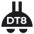
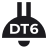
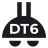
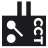

The core problem
was time.
Cooper Lighting was retiring two legacy platforms, Fifth Light and iLight. WaveLinx DALI was their DALI-2-certified replacement. There was no product to iterate on, and the DALI-2 protocol's timing rules are physical, they cannot be engineered away.
In V1, adding a hub locked the entire UI behind a blocking loader, "Processing… Adding DALI Hub and Devices to WAC" that started at 10 minutes and grew to 27.5 minutes per hub to absorb 250 devices. Multiply across 10 hubs per controller, and contractors sat idle for hours.
Discovery triggered a full scan of all four buses. No navigation, no area creation, no parallel work, and no progress visibility, until it finished.
Every screen, device trees, area lists, the Operate floor plan, assumed a handful of wireless devices. DALI-2 brought thousands.
Channel partners and facilities teams were judging whether WaveLinx DALI could credibly replace their tools. A blocking experience at hospital scale was not acceptable.
UX owner, end to end.
I led UX strategy and design from discovery through handoff, the primary design voice for the entire WaveLinx DALI commissioning system, working directly with Engineering, Architecture, Product, Firmware, and Development, and presenting milestones to groups of 25+ stakeholders for alignment.
The DALI bus scan is slow by protocol design. Addressing 128 devices per bus and fetching their parameters takes real time.
This was never a solvable engineering problem, the protocol ceiling is physical. The UX had to absorb the constraint and design around it, not through it.
Five rooms, one mental model.
Research ran in parallel with design while hardware and firmware were still being built. I used the engineering team as a primary source, supplemented by field context from channel partners and a teardown of three competing DALI commissioning tools. Structured discovery ran across five stakeholder groups before any design started.
Bus bandwidth limits, hub-discovery latency, and the max safe polling frequency during live commissioning.
Loading 3,000+ devices into the existing device tree would time out and degrade the whole app.
Hospital deployment context, commissioning sequence, and wired-only regulatory requirements.
Technicians cross-reference floor plans with MAC lists, work bus-by-bus, and need instant device ID under time pressure.
Adding devices during construction expansions, rebooting hubs without disrupting live floors, fast fault ID.
The existing architecture assumed 30–50 devices per controller. Every piece of UI was built at that scale. DALI-2 didn't add a feature, it forced a re-examination of how the entire application handled volume.
"I've been doing DALI for 12 years. I know what order things need to happen. But your app doesn't, so I have to fight it."
From "wait for it"
to "work through it."
{{ pivotBody }}
"We stopped designing for when the scan finishes, and started designing for what users can do while it's still running."
One modal, the whole app behind it.
The actual V1 screen, "Processing… Adding DALI Hub and Devices to WAC." It sat on top of a frozen interface for 10–27.5 minutes per hub. V2 deleted this blocking state entirely.
10 HUBS × 27.5 MIN
Discovery, not data entry.
Step through it. Hub-first import takes a raw hub from the network to a named, addressable system, with a persistent device counter the whole way.
{{ stepBody }}
The full lifecycle, after launch.
Commissioning is only the beginning. Hospitals expand, floors get reconfigured, and devices get added to existing buses over time. The Manage Hub screen supports the entire lifecycle of a DALI-2 install, letting technicians monitor hub health, rescan for new devices, and take corrective action without disrupting a live facility.
Inventory, broken down by bus.
The left panel lists every bus under the hub with live device counts. Selecting a bus breaks inventory down by category, Drivers (64), Wall Stations (23), Sensors (13), CCIs (2). A persistent Remaining Devices in WAC counter keeps installation-wide context in view.
A guarded rescan on a live system.
When devices are added to the physical install post-commissioning, the technician triggers Find Devices from the top bar. Because the scan temporarily impacts hub operations, a confirmation dialog protects against accidental triggering on a live system.
Buses with newly discovered devices are flagged with a green indicator and a new-vs-existing count, so technicians know which buses need attention without scanning each one manually.
New and existing, kept separate.
The detail panel separates New Devices from Existing Devices, organized by type. A single ADD DEVICES (n) action imports all of them. A processing modal sets expectations with a 5–8 minute estimate, and a toast confirms the result: "18 NEW Devices added to Bus 1."
Separating new from existing devices before committing any change was a deliberate safeguard at hospital scale, blindly importing an unexpected count could cause real downstream commissioning problems. The green bus indicators give at-a-glance triage so technicians can prioritise which buses to address first, and the processing modal's time estimate was added in direct response to commissioning teams who needed to plan around the 5–8 minute rescan window on a live hub.
Filter before load.
A hospital floor with six-plus hubs could dump thousands of devices into the Unassigned list, flooding the screen and crippling load times. So I inverted the default: instead of "show everything," the technician picks a scope first.
A "Select to Start" empty state with System (DALI or PRO/CAT) → Hub → Bus dropdowns narrows the list to a single bus's 128 devices before anything renders. It reframes the work as bus-by-bus, exactly how DALI-2 is physically wired.
Scales 50 → 3,000
with no model change.
The fixed device tree became a Building → Floor → Area → Zone → Device dropdown bar, and the map was clustered. Zoom in to break clusters into devices; toggle type or health.
The two-wire bus,
in every icon.
I custom-designed the device icon set in Adobe Illustrator, embedding the DALI 2-wire bus, the defining physical trait of every DALI device, as a shared motif. Users recognize "this is a DALI device" as a category, then read the type at a glance. Exported as SVG, validated for rendering via Fontello.

Light Fixture · DT8
DT6 · Single Channel
DT6 · Dual Channel
RSP DAC · CCTA moving floor, decided in lockstep.
Hardware prototypes arrived on a rolling basis and third-party device availability was uncertain throughout. Weekly cross-functional reviews kept design in lockstep with engineering. Each challenge below maps to a concrete design response.
Zero to one, shipped
and QA-clean.
The V1→V2 pivot meant recognizing that a 10-minute blocking import wasn't a loading-state problem, it was an architectural mismatch between the commissioning mental model and the protocol's real timing. The engineering answer was a longer timeout. The UX answer was to make the entire wait invisible by designing around it.
Hardware bandwidth limits, device naming, the dual-channel abstraction, the floor-plan hierarchy, none of these were decisions made in isolation. Each required navigating engineering constraints, product commitments, QA dependencies, and hardware availability at once. My experience across connected lighting, enterprise SaaS, and hardware-adjacent environments gave me the credibility and domain fluency to lead these calls rather than react to them.
The patterns from DALI, non-blocking scan, the two-banner progress model, filter-before-load, dropdown navigation, device-vs-endpoint display logic, are now the reference architecture for future IoT subsystems in WaveLinx, documented in the CLS Design System for reuse.
The company now sells the story the design told.
After release, Cooper Lighting’s own LinkedIn campaign led with the exact promise this work was built around, “DALI, Simplified.” Automatic addressing, simplified wiring, commissioned like any WaveLinx system, and the campaign’s hero image is the shipped commissioning app itself.
When marketing repeats the simplification story that UX orchestrated across product, firmware, engineering, and field teams, the design has stopped being an internal argument and become the product’s public voice.
“DALI has always been powerful. But it hasn’t always been simple — WaveLinx DALI changes that.”